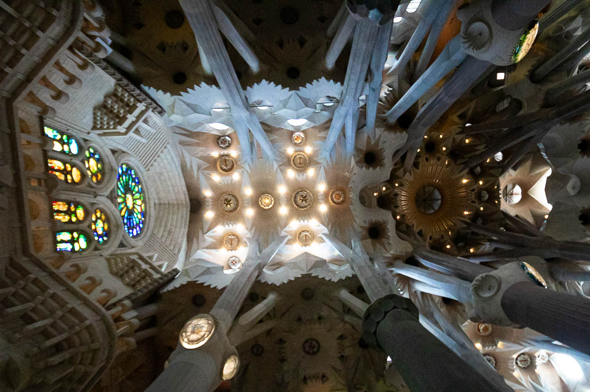

About me
I moved to Montreal in 2022 and fundamentally changed the way I practice and share art. I am incredibly curious and dabble in all kinds of creative work. I consider myself a multi-disciplinary artist but my foundation has always been photography and writing.
I love to travel, observe the world around me, learn new languages. I love to dance and work with my hands. And I love to capture the essence of unique experiences.
Sometimes I'm a bit all over the place - but that's how I like it. I'm never bored and by having me around, I don't think you will be either. 🤩
Leaving Meta platforms
I recently decided to delete my accounts on all Meta-owned platforms. This has been a long time coming and recent events (need I name them?) have finally prompted me to leap. I've been disillusioned with social media platforms, the state of journalism and the rise of AI for a while now. I work in tech and understand (more or less) how these things work. I also understand how little ethics play a role.
Before making this decision I reflected on the features I use on these platforms. I realized that there are alternatives that simply work better and do not have an extreme political leaning. I also realized there is much I could do without.
I hope this will allow me to be more mindful of the "content" I put out into the world and how I value art and credibility. I also believe it will change what I share and how I view my own art and words.
I don't have an agenda to make money, to sell your data, or to change your political view. My goal is to share my perspective as an observer, artist and writer and to imbue my own (very feminine! 😇) energy into everything I do. If you get something out of it, that's fantastic.
Content driven by topics of interest
My website will be my home base, since it is a platform I own and built on my values and sense of ethics. This is where I will share blog posts, photo collections, creative writing and travel reflections. I will re-post on other select platforms like 500px or Medium.
Choose the topics of interest to you! Throughout 2025 I plan to post a new photo series or blog post every 2-4 weeks. You will receive an email if the post is relevant to the topic(s) you've selected. Some blog posts will cover more than one topic area.
There are 4 topics you can choose:
- Photography: photo collections and blog posts about my photographic work
- Creative Writing: poetry, short stories and publication news
- Travel & Lifestyle: blogs about my travel adventures or general life musings
- Digital design & SEO: business-focused content related to web design, Search Engine Optimization (SEO) and content creation.
I promise to keep emails short and aesthetically pleasing. My goal is to throw a little gift into your inbox.
Subscribe to emails